그 전에 다들 VS vode는 받고 왔을거라고 믿습니다.
VS code 다운 링크다음은 목차입니다.
어파치를 사용하기 위해서는 우선 어파치를 다운 받아야 합니다.
어파치 다운 링크이것은 apache의 다운로드 링크입니다.
링크를 열었다면 다음과 같은 화면이 보일겁니다.
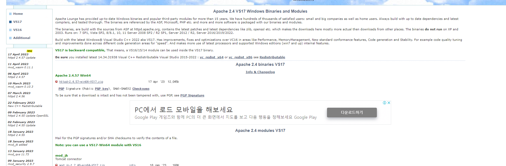파란 원을 안의 링크를 누르면 자동으로 다운로드가 시작됩니다.
안정성이 걱정된다면 바로 전 버전을 받도록 합시다.
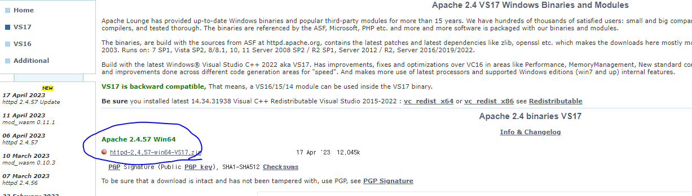압축을 풀어줍니다.
특정 파일만 옮기면 되니 (그게 더 편함) 바탕화면에 풀어줍니다.
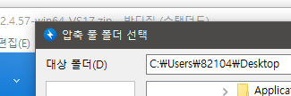아래 보이는 것 만 C로 옮깁니다.
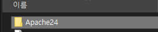이러면 기본 다운로드는 끝이 납니다.
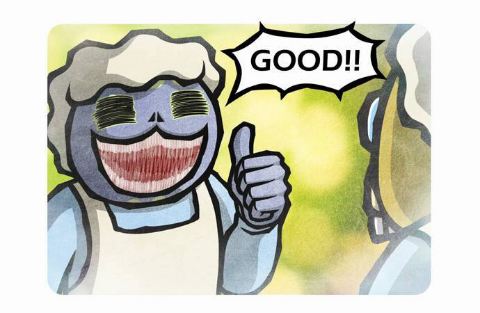이제 C로 옮겼으니 파일을 수정해야 합니다.
우선 아래의 conf폴더를 찾습니다.
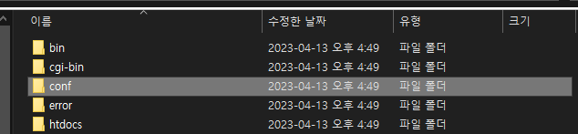우린 이 파일을 수정할 겁니다.
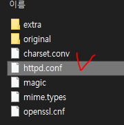물론 VScode로 할 것임.
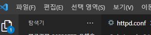crt + F4 기술로 ServerRoot를 찾습니다.
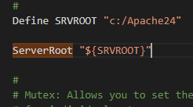여기서 왜 Apache파일만 옮기는 지 알 수 있는데,
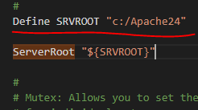아마 저것 때문일 것임.
각설하고 밑에 걸 고쳐봅시다.
ServerRoot "${SRVROOT}"를 ServerRoot "c:/Apache24"로 바꿔줍시다.
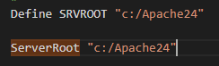전과 마찬가지로 ServerName을 찾아줍시다.
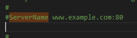주석 해제 후 localhsot로 바꿔줍니다.
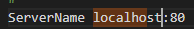Listen이 80인지 확인합니다.(아니라면 바꿔줍니다.)
클라이언트의 http 요청을 수신하는 웹서버의 포트 80 이라는 뜻입니다.
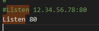DocumentRoot(index.html이 저장되는 위치)를 c:/Apache24/htdocs로 바꿉니다.
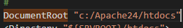이걸로 기본 준비는 끝났습니다.
이제 기본 준비는 모두 끝났으니 서버에서 Apache를 받아줍시다.
그럼 cmd를 "관리자 권한"으로 실행해 줍니다.
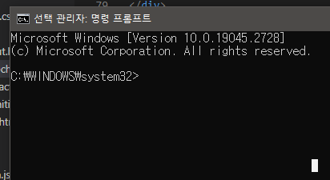cd c:\Apache24\bin 을 입력합니다.(바이너러 폴더로 이동)
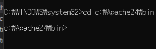아파치 서비스(데몬)을 설치합니다.(httpd.exe -k install)
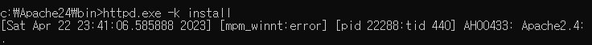bin 폴더에서 ApacheMonitor를 실행합니다.
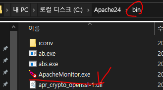여기서 ApacheMonitor와 똑같은 그림을 선택 후 start를 누릅니다.
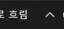다운로드, 실행이 완료되었으니, 테스트를 해 봅니다.
http://127.0.0.1에 접속 해 봅니다.
실행 링크이러면 Apache 다운로드와 설정, 실행이 완료된 것입니다.